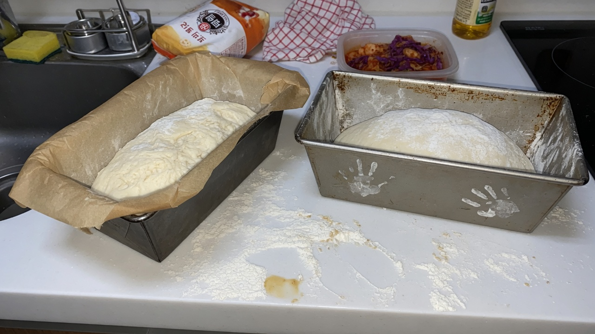

일지 15편 대신, 이 글이 하는 일
이 사이트의 밤식빵 글은 두 종류입니다.
- 실전 정리(이 글) — 가져갈 기준. 우선 읽기.
- R&D 일지 1~15차 — 변수 하나를 바꾼 실험 근거. 필요할 때만 열어보기.
일지를 처음부터 따라가면 ‘그래서 뭘 하면 되지?’가 늦게 잡힙니다. 그래서 원칙·고정값 초안·겨울 보정·재료 선별·메모 양식만 한 편에 모았습니다. 각 숫자의 근거가 궁금할 때만 해당 차수 일지로 내려가면 됩니다.

실험 기간은 2025년 6월~2026년 초, 블로그 발행은 2026년입니다. 실험일과 발행일을 구분해 두었으니, 여름 숫자를 겨울에 복사하지 마세요.
전체 목차는 읽기 순서 안내에 있습니다. 시간이 없으면 이 글 → 관심 일지 1~2편이면 충분합니다.
바로 쓸 일곱 가지 판단 (일지 결론만)
- 토핑 시점 — 성형 직후보다 1차 발효 후·성형 직전이 밀착에 유리했다 (2차). 시럽은 표면 절반만 얇게.
- 수분 — 시험용 식빵 반죽 대비 +2%p만 올려도 다음 날 촉촉함이 소폭 나아질 수 있다 (3차). 당일 차이는 작을 수 있음.
- 보관 — 식힌 뒤 루즈 백이 실온 개방보다 다음 날 속 촉촉함에 유리 (4차). 겉 눅눅함은 트레이드오프.
- 시럽 졸임 — 농도 2:1 유지한 채 졸임 +2분이 흘러내림·밀착에 가장 도움이 됐다 (5차). 단맛도 같이 올라감.
- 단맛 보정 — 졸임을 줄이기보다 설탕 총량 -10%가 단맛 축에 유리 (6차). 밀착은 소폭 약해질 수 있음.
- 재료 — 통조림보다 신선 밤(가을)이 향·고소함에 유리 (7차). 크기는 중간 우선(14차). 큰 밤은 간격·가벼운 압착(15차). 한 팬에 크기를 섞지 말 것.
- 굽기 후 — 뜨거운 상태에 물 희석 시럽을 얇게 브러싱하면 윤기·밀착 보정에 도움 (8차). 단맛 크게 안 올리려면 설탕 추가 금지.
위 7가지는 동시에 처음부터 적용할 목록이 아닙니다. 일지 순서대로 하나씩 검증한 뒤 묶은 결과입니다. 처음이면 2→3→4만 먼저 맞춰 보는 것도 방법입니다.
7가지를 번호 순서대로 적었지만, 실제로는 2차·3차·4차가 먼저 맞춰지고 5~8차가 그 위에 쌓였습니다. 토핑이 흘러내리면 2·5차, 식은 뒤 건조하면 3·4차를 먼저 열어보는 식으로 쓰시면 됩니다.
겨울 보정은 위 일곱 가지 밖 표로 모았습니다. 난방·습도·개방 분은 겨울·난방 표를 보세요. 일지 9~13차를 처음부터 읽을 필요는 없습니다.
고정값 초안 — 복사 금지, 메모용
중간 정리와 6~8차를 합친 현재까지 가장 가까웠던 조합입니다. 그램은 제 오븐·반죽량 기준이라 숫자 대신 비율·순서 위주로 적었습니다.
고정값 초안은 '이 조합으로 한 번 더 굽기'용입니다. 밀가루 브랜드·팬 크기·오븐 라벨이 다르면 굽기 시간은 일지 숫자와 달라질 수 있습니다. 메모에 집 오븐 상화 실제 온도를 적어 두면 다음 차수 비교가 쉬워집니다.
- 반죽: 기능사 식빵 기준 수분 +2%p
- 토핑: 1차 발효 후, 성형 직전. 통조림 또는 손질한 신선 밤 — 중간 크기 우선, 한 팬에 크기 섞지 않기(14차). 큰 밤 예외 시 간격·가벼운 압착(15차)
- 시럽: 설탕:물 2:1, 5차 대비 졸임 +2분, 6차 대비 설탕 -10%
- 굽기: 집 오븐 상화 200°C·하화 190°C, 32분 (라벨 기준)
- 굽기 직후: 6차 시럽 + 물 1스푼, 2분 이내 한 겹 브러싱
- 보관: 완전 식힌 뒤 루즈 백, 실온 12시간 내외. 겨울에는 식힌 뒤 개방 0~30분(10차) — 40분 이상은 겉 건조가 커질 수 있음
- 판단: 당일 + 다음 날 아침 단면·식감까지 기록
겨울·난방 실내에서는 발효 시간을 줄이거나 늘리는 보정이 필요합니다. 8차 고정값을 겨울에 그대로 쓰지 말고 9차 메모를 함께 보세요.
겨울 보정(9차): 난방 실내 19°C·습도 35% 전후에서 1차 발효 58분(8차 여름 55분 대비 +3분). 손가락 눌림 기준은 8차와 동일하게 맞춤. 습도 40% 이상이면 같은 58분이 여유 있을 수 있음(11차) — 타이머보다 눌림 우선, 56분 1순위(12차), 55분 보조(13차·살짝 부족).
겨울·난방 — 일지 9~13차를 표로 합친 것
| 조건 | 후보 | 근거 일지 |
|---|---|---|
| 실내 약 19°C, 습도 약 35% | 1차 발효 58분 후보 | 9차 |
| 습도 약 40% 이상 | 1차 발효 56분 1순위, 55분 보조 | 12·13차 (11차에서 58분 여유 확인) |
| 식힌 뒤 보관 | 개방 0~30분 후 루즈 백 (40분+는 겉 건조↑) | 10차 |
| 신선 밤 | 중간 크기 우선, 한 팬에 섞지 않기 | 14차 |
| 큰 밤을 쓸 때 | 간격 넓히고 올린 직후 손끝 1회만 | 15차 |
여름·가을 일지(1~8차) 숫자를 겨울에 그대로 쓰지 마세요. 온도·습도를 먼저 적고 분을 맞춥니다.
집에서 특히 망하기 쉬운 것
- 여러 변수 동시 변경 — 시럽·시점·수분을 한 번에 바꾸면 무엇이 효과인지 모름
- 당일 맛만 보고 판단 — 수분·보관 효과는 다음 날에야 보이는 경우 많음
- 학원/레시피 온도를 집에 그대로 — 같은 숫자라도 색·시간이 다를 수 있음. 메모에 '집 오븐 라벨' 명시
- 5차만 보고 끝났다고 느낌 — 단맛·재현성·계절 변수가 6~8차에서 이어짐
- 브러싱 과다 — 단맛·겉 눅눅함이 동시에 올라감
- 여름 발효 분을 겨울에 그대로 쓰기 — 습도·난방 메모 없이 58·55분을 복사
- 밤 크기를 한 팬에 섞기 — 14차에서 들쭉날쭉의 원인. 중간만 본굽에 쓰기
- 일지 15편을 순서대로 다 읽어야 한다고 생각하기 — 이 글 + 막히는 항목 일지 1~2편이면 시작 가능
저도 3차 전에는 토핑만 고집하다 수분을 늦게 손댔습니다. 순서가 헷갈리면 이 글의 7가지 목록 순서를 참고하세요.
저도 4차 전까지는 식은 빵을 그냥 접시에 덮어 두었다가, 다음 날 겉이 더 바삭해진 걸 '성공'으로 착각한 적이 있습니다. 보관 방식도 변수라는 걸 4차에서야 분명히 알았습니다.
실험 메모 양식 (복사해서 쓰기)
일지와 같은 네 칸이면 충분합니다. 노트 앱·종이 모두 가능합니다.

메모 양식은 기능사 실기 때 쓰던 '망한 점 한 줄' 습관에서 이어졌습니다. R&D에서는 망한 점이 세 가지로 늘었고, 다음 날 아침 칸이 붙으면서 3차·4차의 차이가 숫자로 보이기 시작했습니다.
- 오늘 바꾼 것 1가지 (그램·분·시점 중 하나)
- 고정한 것 (이전 차수에서 유지한 조건 3줄)
- 실패 3가지 (눈에 보인 현상만, 원인은 따로)
- 다음 날 아침 (단면·식감 한 줄 + 사진)
실내 온도·습도 한 줄을 추가하면 계절 재현에 도움이 됩니다. 1차 일지에서 '다음 날 건조'를 처음 적었을 때와 8차 아침 메모를 나란히 두면, 수분·보관이 왜 들어갔는지 한 번에 보입니다.
사진 각도는 전체·토핑 클로즈업·단면·다음 날 네 장을 고정해 두었습니다. 화려하지 않아도 비교용으로 충분합니다.
일지는 언제 열까 — 의사결정 한 장
구글·독자 모두 “비슷한 글이 많은 사이트”보다 한 허브 + 필요한 근거를 선호합니다. 아래만 따라도 됩니다.
- 지금 바로 구울 계획 → 이 글(실전 정리)만. 일곱 가지 + 겨울 표 + 메모 양식.
- 토핑이 흐른다 → 2차, 5차 근거만.
- 다음 날 건조 → 3차, 4차, 겨울이면 위 표.
- 단맛이 과하다 → 6차.
- 재료·밤 크기 → 7차, 14차, 15차.
- 전체 흐름이 궁금 → 읽기 안내 (실험 결과 글 아님).
1~15차를 순서대로 전부 읽지 않아도 이 사이트 가치를 가져갈 수 있게 설계했습니다.
일지 URL을 눌러야 할 때만
정리 글만으로 시작 가능합니다. 아래는 “왜 그 숫자인가”가 궁금할 때만 여세요. 비슷한 설명이 일지마다 반복되지 않도록, 상세는 일지·요약은 이 글로 나눴습니다.
비슷한 빵을 찾는 분께
이 정리가 맞지 않는 오븐·재료 조합도 많습니다. 다른 통조림·다른 밀가루·다른 팬 크기면 최적점이 달라집니다. 그래도 순서와 메모 양식은 그대로 쓸 수 있습니다.
통조림 밤과 신선 밤, 가을 수홍과 봄 통조림은 향·수분이 달라 7가지 중 '재료' 항목만 크게 어긋날 수 있습니다. 그때는 7차 일지를 같이 보세요.
비슷한 추억의 빵이나, 이 7가지 중 어디가 가장 와닿았는지 문의로 알려 주시면 다음 정리·일지에 반영하겠습니다.
이번 주 적용하기
처음이면 2차 토핑 시점과 4차 보관(루즈 백)만 맞춰 보세요. 반죽·시럽은 쓰던 식빵 기준을 유지해도 됩니다. 다음 날 아침 한 줄 메모를 추가하세요.
겨울이면 일곱 가지 전체가 아니라 겨울 표의 온도·습도·발효 분·개방 분만 먼저 적으세요. 숫자가 아니라 눌림이 우선입니다.
이미 여러 차를 따라 했다면, 고정값 초안에서 하나만 빼고 다시 구워 보세요. 빠진 항목이 필요한지 확인하는 방법입니다.
재료 시즌(가을)이면 14차 중간 크기 선별만 추가해 보세요.
발행 2026-06-28, 수정 2026-08-14 (허브 재편·1~15차 반영).
정리하며
이 글은 일지를 대체하는 독자용 허브입니다. 차수가 늘면 표와 일곱 가지만 고치고, 실험 서사는 각 일지에 남깁니다. 비슷한 설명을 15번 반복하지 않으려는 편집입니다.
애드센스·검색 품질 관점에서도 “한 주제에 깊은 한 장”이 “비슷한 장 여러 개”보다 낫습니다. 그래서 겨울·재료 결론을 여기로 모았습니다.
오류·보완은 문의로 받습니다. 수정 시 날짜를 갱신합니다.
초보자가 자주 실수하는 포인트
- 7가지를 처음부터 전부 동시에 적용하기
- 고정값 초안을 확정 레시피로 오해하기
- 다음 날 식감 기록 없이 당일만으로 판단하기
- 계절·오븐 차이 없이 여름 숫자를 그대로 쓰기
체크리스트
- 7가지 중 오늘 건드릴 것 1개만 고르기
- 고정값 3줄을 메모에 적기
- 당일·다음 날 각각 기록하기
- 해당 차수 일지 링크 열어 보기
자주 묻는 질문
- 그램·레시피는 왜 없나요?
- 제 반죽량·밀가루·오븐 기준이라 그대로 옮기면 어긋날 수 있습니다. 대신 일지에서 검증된 순서와 판단 기준을 정리했습니다.
- 1차부터 안 읽어도 되나요?
- 실전만 빨리 보려면 이 글부터 읽어도 됩니다. 맥락이 궁금하면 읽기 안내 순서대로 일지를 열어보세요.
이 글은 운영자의 직접 경험을 바탕으로 작성되었으며, 오븐·재료·환경에 따라 결과는 달라질 수 있습니다. 식품 위생·알레르기 등 건강 관련 판단을 대체하지 않습니다.